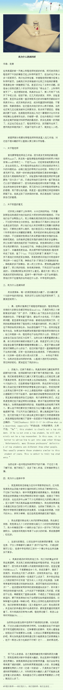

这篇文章说了个有说服力的观点：网页链接 在美国，每月付10美元就在nflx,hulu看到各种新的电视剧的人，应该感谢每个月付几十美元有线电视费的冤大头们，没有这些人的钱，便宜的高质量的电视剧是不可能的。在中国，是什么人在给电视剧制作的成本买单呢？在网上看免费电视剧的人该感谢谁呢？
借着程代展学生不搞科研事件说。不管是招生还是招工，遇到聪明优秀的人，即使人家对你们的东西毫无兴趣，大家也愿意一个劲的开导啊，劝啊。遇到那些充满热情但能力略有欠缺的，愿意多给些机会的倒是少了很多。这个高节奏的时代，大家愿意留给那些后进者的耐心和时间越来越少了。
这学生说他厌恶科研的原因是"累"和"没能力",却只字未提他是不是喜欢他做的研究工作本身,没有告诉我们他是不是享受思考这些难题本身. 我觉得在就是在暗示：不喜欢．对一个不享受研究工作的人，没必要强求人家继续作科研了吧．不如把机会让给那些能力暂时有欠缺但是充满热忱的孩子们． //@马少平THU:@女教师带娃:《昨夜无眠：我的天才学生要当中学教师！》后续：大家还记得那个很有机会成为国家级甚至世界级科学家的年轻人吗？今天上午他发表文章《我为什么逃离科研》讲明：他为什么离开科研领域？为什么选择做中学教师？以及其他种种细节和内心剖析。祝福他成为一名优秀的中学教师。@徐小平 @杨东平 
中国有一个行业做到了发达的目标化数量化管理，那就是高中。一切围绕升学率和考分的极端数量化管理。联想到美国，原先学校疏于管理，而小布什试图在公立学校搞数量化管理，搞根据学生成绩考评教师，结果是应试教育大发展，然后引起诸多批评。看起来教育恰恰是不该这么极端目标化的行业。
 网页链接 在美国，每月付10美元就在nflx,hulu看到各种新的电视剧的人，应该感谢每个月付几十美元有线电视费的冤大头们，没有这些人的钱，便宜的高质量的电视剧是不可能的。在中国，是什么人在给电视剧制作的成本买单呢？在网上看免费电视剧的人该感谢谁呢？
网页链接 在美国，每月付10美元就在nflx,hulu看到各种新的电视剧的人，应该感谢每个月付几十美元有线电视费的冤大头们，没有这些人的钱，便宜的高质量的电视剧是不可能的。在中国，是什么人在给电视剧制作的成本买单呢？在网上看免费电视剧的人该感谢谁呢？